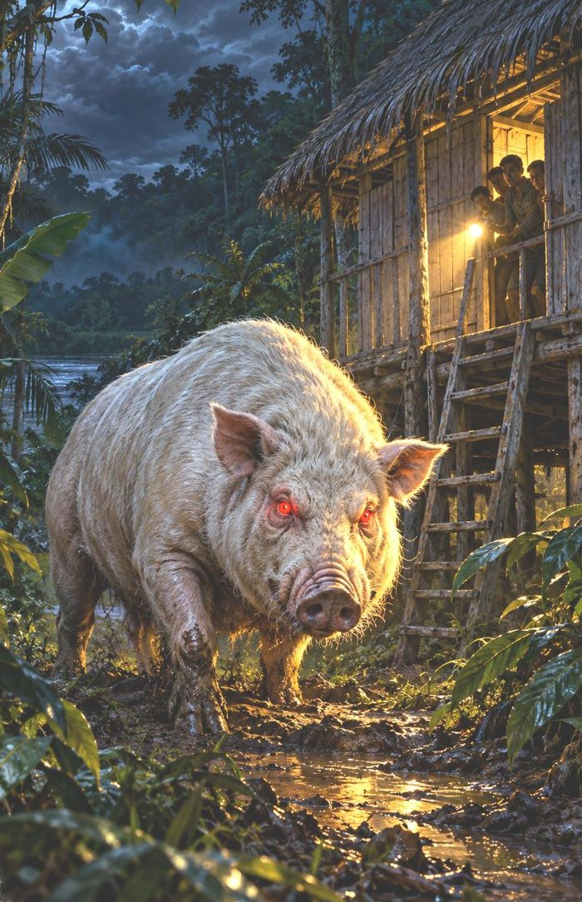
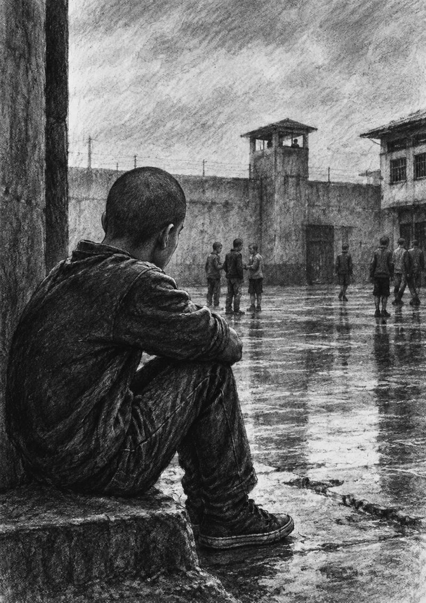

La leyenda y el puesto de salud
Qué hace un profesor cuando una familia cree que a su hija la enfermó la Madre del Agua.

Maestro y escritor de Loreto
Leyendas del monte, aulas rurales y los patios de un centro juvenil, contados por quien estuvo ahí.
Un catálogo que crece. Cada libro cuenta una parte del mismo camino: de la selva al asfalto.
Durante más de veinte años fui profesor en comunidades de Loreto. De día enseñaba a leer. De noche escuchaba hablar de la Runa Mula en voz baja, como si el monte pudiera oír. Después crucé el portón de un centro juvenil en Lima. Escribo lo que vi en los dos lugares, porque si queremos que los chicos lean, los maestros tenemos que atrevernos primero.
«La esperanza germina siempre que un maestro se niega a dar por perdida una vida.»Tras los muros de Maranguita
Francisco Daza Tananta

«Adelita era una de esas niñas que se recuerdan con especial cariño después de muchos años.»
Un relato completo e ilustrado del libro, con su glosario. Además, serás de los primeros en saber cuándo sale cada nuevo libro.

Francisco Daza Tananta nació en Iquitos en 1966. Estudió en el Instituto Superior Pedagógico Público «Loreto» y enseñó más de dos décadas en el distrito de Nauta, muchas veces en escuelas rurales.
También fue árbitro de fútbol y vóleibol y juez de básquetbol, oficio que lo llevó por buena parte del Perú. Ya en Lima trabajó como educador en el centro juvenil de la capital. Vive en Lima con su familia.

2026Su testimonio sobre el centro juvenil llega a libreríasQué hace un profesor cuando una familia cree que a su hija la enfermó la Madre del Agua.
Lo que el arbitraje le enseñó a un maestro sobre la autoridad justa.
Los educadores de los centros juveniles trabajan donde casi nadie mira.